TortoiseGit 安裝
下載安裝程式
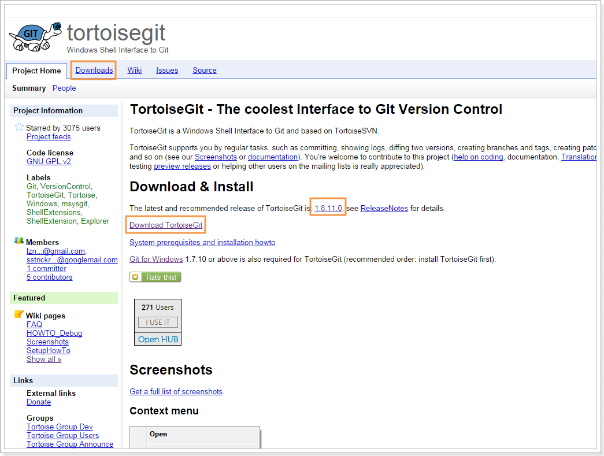
- 進入到下載頁面後，主要有兩個部分『Download』主要的安裝程式及『Language Packs』中文化語言包，如果不需要中文化則只下載『Download』區塊的主要安裝程式做安裝即可，在下載的連結都有分『32-bit』和『64-bit』這部分依請自已的作業系統做選擇下載。
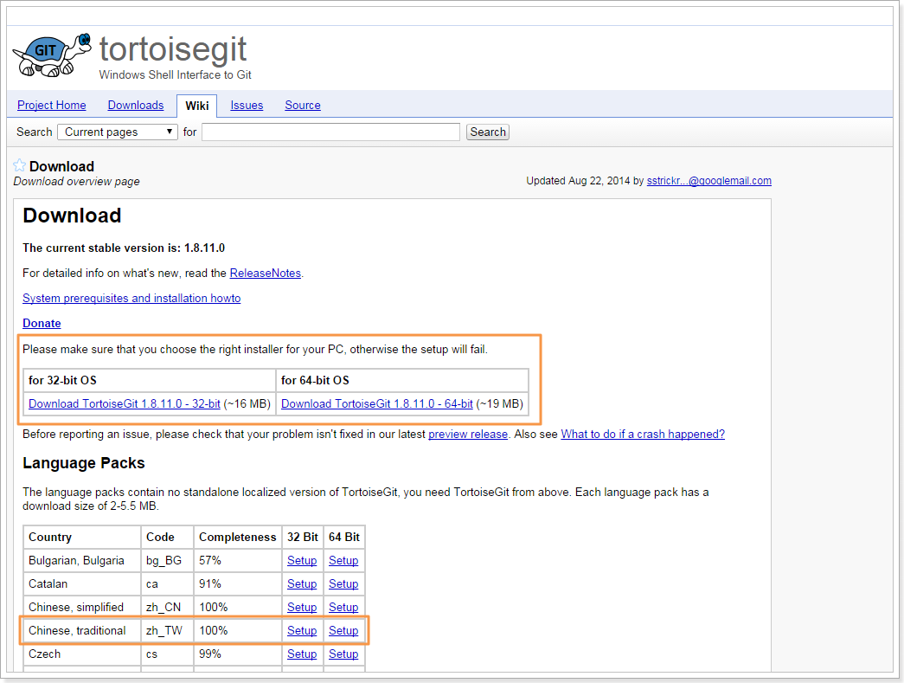
安裝主程式
- 下載完成後，執行安裝程式，選擇開始安裝並同意版權聲明
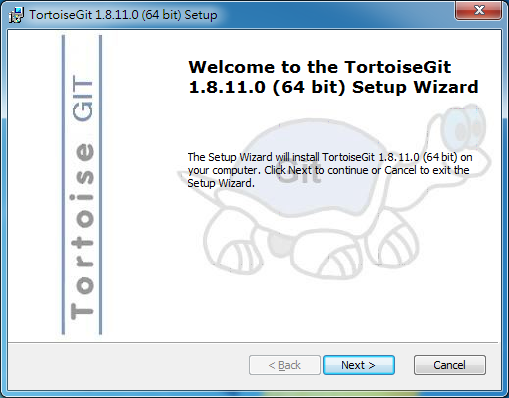
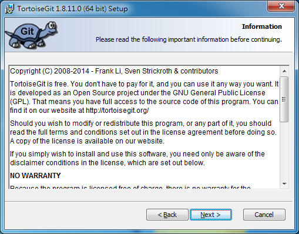
- 選擇SSH客戶端，預設是使用TortoisePLink，與Windows作業系統的相容性及使用上較方便，建議使用此選項
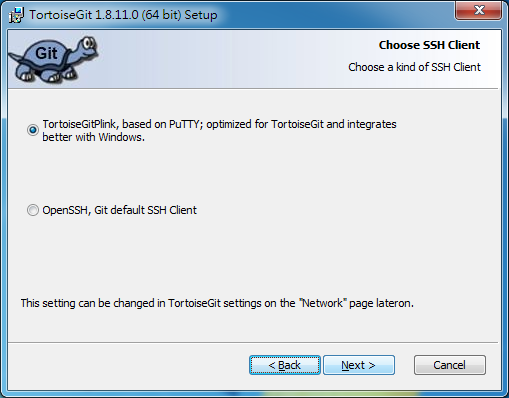
- 自訂安裝，使用預設值，執行『Next』就可以，如果有要改變安裝目錄的話請點選『Browse』後選擇要安裝的資料夾，64 bit預設安裝目錄為『C:Program FilesTortoiseGit』，32 bit預設安裝目錄為『C:Program Files (x86)TortoiseGit』
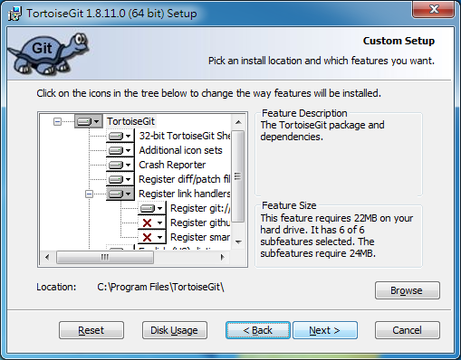
- 安裝設定完成，執行『Install』安裝TortoiseGit
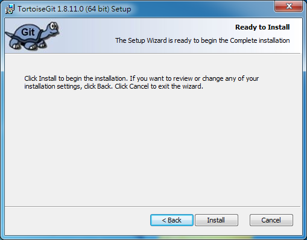
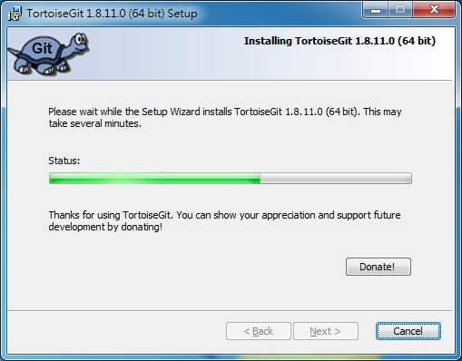
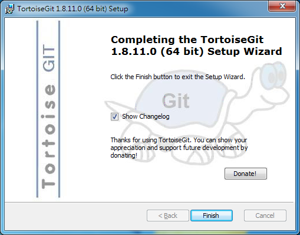
- 在Git專案資料夾中點選『滑鼠右鍵->TortoiseGit』就會出現如下圖的功能列可使用
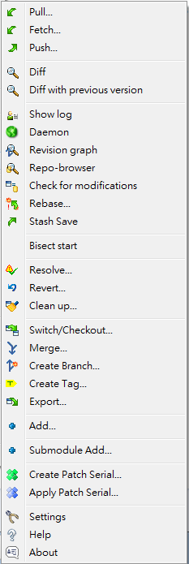
安裝中文化語言包
- 下載完成後，執行中文化語言包安裝程式，點選『Next』進行安裝
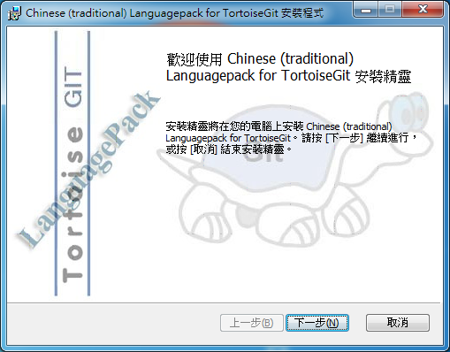
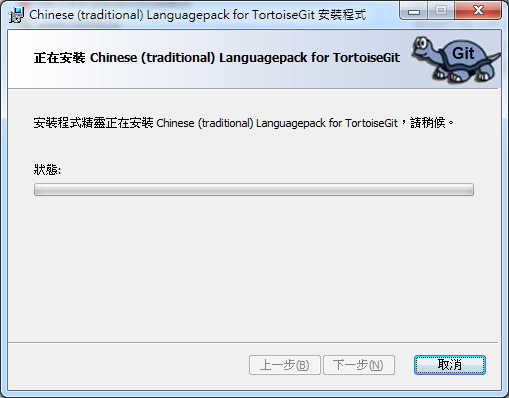
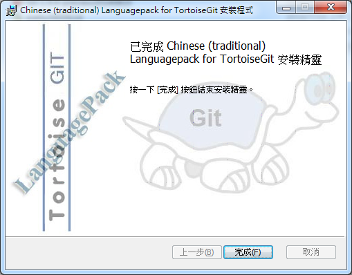
- 打開軟體設定頁面，如下圖，在程式集中找到『TortoiseGit->Settings』
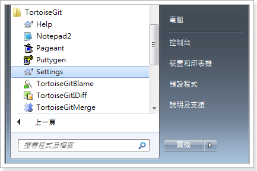
- 設定語系，在『General->Language』，點選變更為『中文(繁體)(中華民國)』，最後點選視窗下方的『確定』
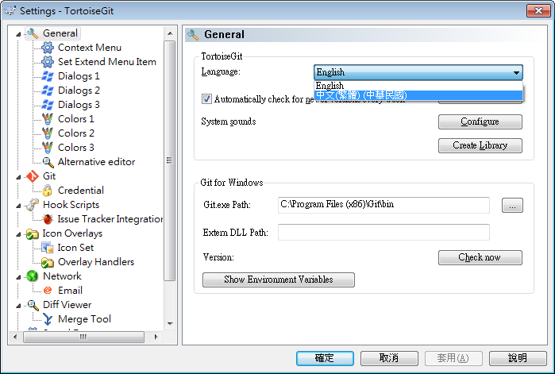
- 再回到Git專案資料夾中點選『滑鼠右鍵->TortoiseGit』就會出現如下圖的功能列已完成中文化
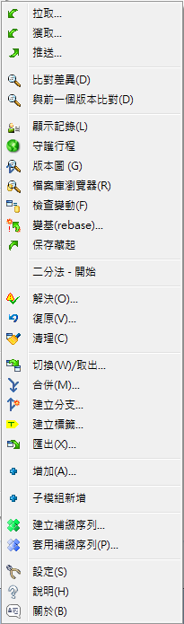